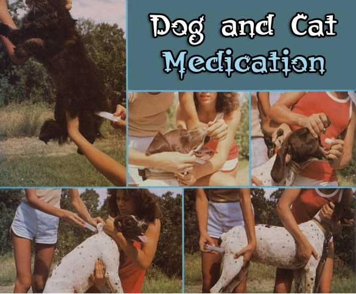

TOP ROW, LEFT TO RIGHT: An angry tabby can leave permanent reminders of its distress, so use the tranquilizing ""maternal"" back-of-the-neck grasp when administering a shot... Liquid medicine will slip 'twixt Rovers tongue and his lip (then just tilt his head back and the elixir will be gone in a gulp)... Lubricate a ""bolus"" of this size with butter or mineral oil before you tickle pooch's tonsils with it, and then stoke the neck?or blow in the nose?to induce swallowing. ABOVE: Subcutaneous injections are given in the middle of the dog's back, in the loose fold of skin just over the shoulders. Have a helper restrain Fido so you don't get bitten... Give intramuscular injections in the rear third of the dog's thigh, a safe distance from the sciatic nerve that runs down the middle of the leg...